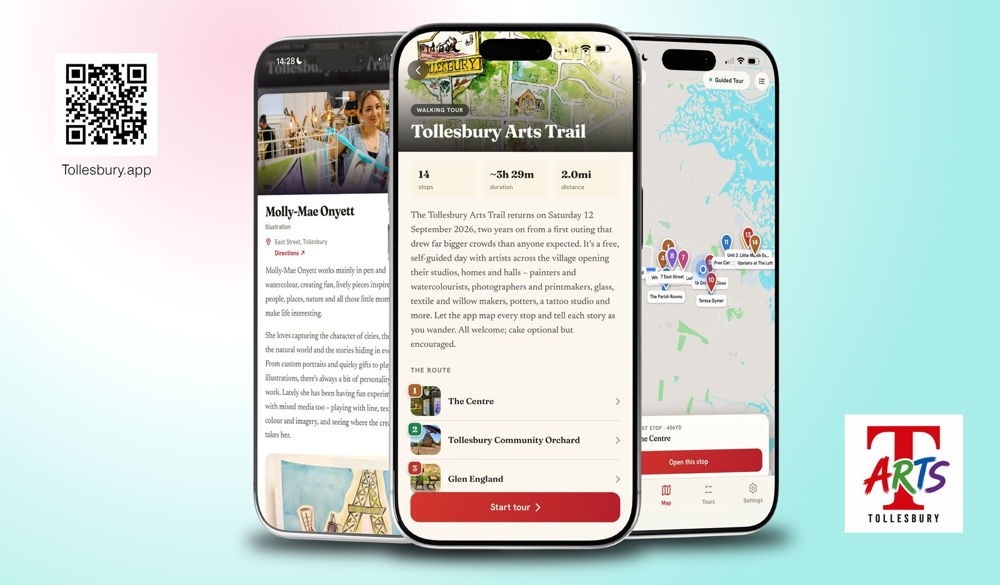

Community · Arts · Marketplace
Tollesbury Arts Trail
A website for the village arts trail, and a proposal to turn it into a year-round online gallery where the artists list their own work and set their own prices.
- WordPress
- WooCommerce
- Dokan
- Stripe

Context
The Trail itself is a single day, the twelfth of September, every two years. That is a thin peg to hang a village’s artistic life on, and it is why the site behind it was built on the Nearmark location platform rather than as a one-off. The same walking tour can carry Open Gardens, or the village’s maritime history, or a generic route, and a ‘Lost Tollesbury’ of old photographs is planned. The platform stays useful between Trails; the artists’ selling does not.
The problem
A village artist has nowhere sensible to sell online. Setting up alone means a shop, a payment provider, postage rules and a tax position, for perhaps a dozen sales a year. The alternative is a commercial gallery, which takes a substantial share of every sale and pays out on its own schedule.
So the work exists, the audience exists, and for almost all of the two years between Trails there is nothing connecting them.
The approach
A permanent shop window for the Trail’s artists: one gallery, one basket, one checkout, with every piece clearly marked with the artist who made it. The walking-tour app links across to it, so somebody who walks the Trail in September can still buy from those artists the following spring.
It runs on WordPress and WooCommerce with Dokan on top, which turns a single shop into a marketplace of separate sellers. Each artist gets their own store page, their own listings and their own orders, and cannot see or alter anyone else’s. An artist can add a piece, change a price or mark something sold themselves. Stripe handles the cards, and the money is held as the artist’s rather than the gallery’s income until it is paid out with a statement.
The theme is bought rather than built. A shop theme styled to look like a gallery is less exciting on a demo site than the museum themes, and considerably less trouble to live with, because it is built for multiple sellers from the outset.
The design decision that matters
The self-service dashboard is the part a technologist would lead with, and it is the part I recommended we do not rely on. Several of the Trail’s artists have no shop, no social media, and do not check email often. A system that assumes they will log in to spot an order will fail quietly: work goes unposted, and the first anyone hears of it is an unhappy buyer.
So for the first year a volunteer lists work on the artists’ behalf from a simple form, and orders are phoned or texted through. The dashboard sits there, ready, for the artists who want it, and more will want it once they have seen it working. Designing for the users who actually exist is worth more than designing for the ones the software assumes.
Where it stands
The proposal is with the Trail committee, and the build is conditional on funding being awarded. It also says plainly what I am least comfortable about: the gallery needs somebody other than me to run the day to day, and if the committee cannot find that person, my recommendation is that we do not start.
